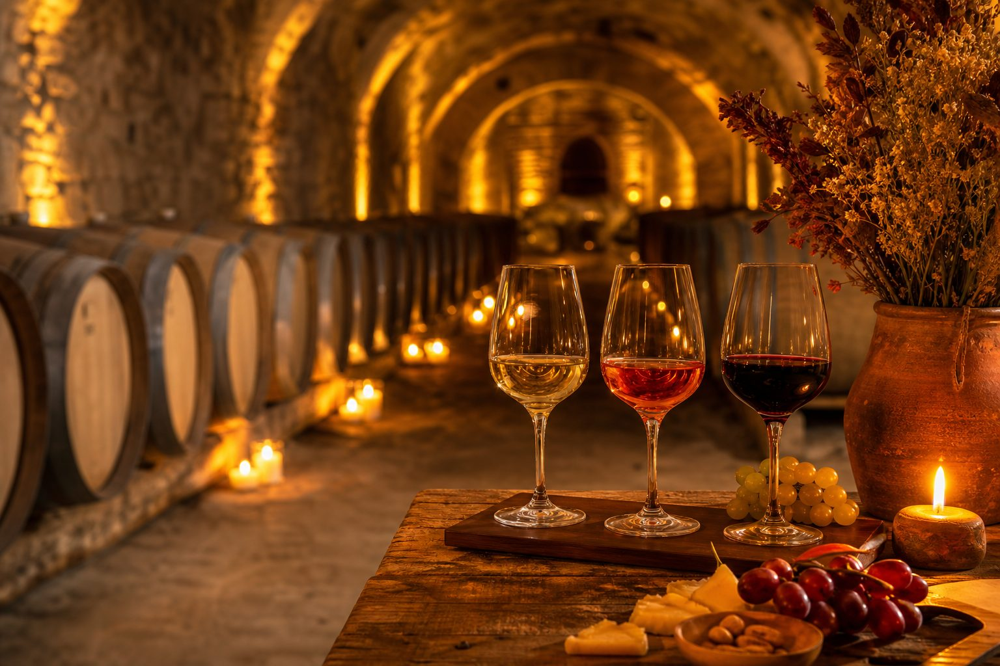

● Онлайн
С чем подать эту бутылку?
Нейро-сомелье соберёт идеальную пару «вино + блюдо» и подскажет температуру подачи под конкретную бутылку. Спросите его прямо здесь, на сайте.

Пять чувств, один бокал. Научитесь читать вино — и храните его так, чтобы каждая бутылка раскрылась полностью.
Не торопитесь — вино любит внимание.
Слишком тёплое красное и ледяное белое — частая ошибка. Вот ориентиры.
Пять правил, чтобы бутылка дождалась своего часа.
Нейро-сомелье соберёт идеальную пару «вино + блюдо» и подскажет температуру подачи под конкретную бутылку. Спросите его прямо здесь, на сайте.